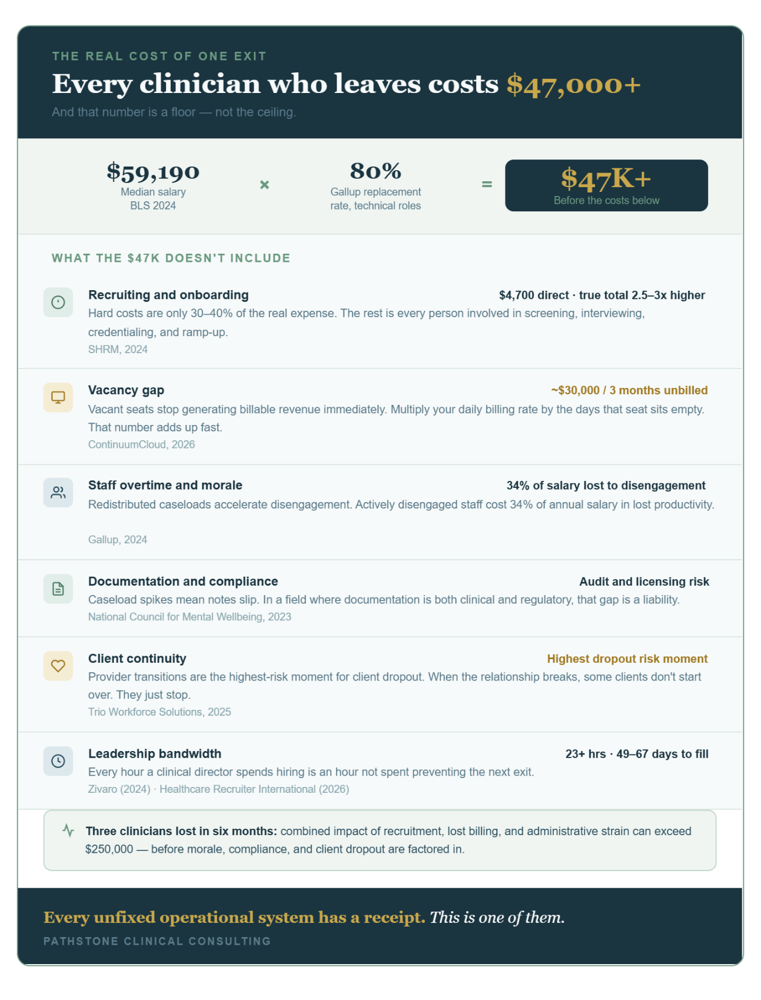

What Clinician Turnover Is Actually Costing Your Organization
Imagine a typical Tuesday morning: you have your second coffee, you glance at your email queue, and then a good clinician walks in and gives notice.
By Thursday, the team knows and something shifts. The caseload gets quietly redistributed, the schedule gets adjusted, and two or three people absorb what one person used to carry. The documentation starts slipping because there aren't enough hours. A client asks who their new therapist will be and nobody has a good answer.
The clinical director is now doing two jobs: their own and the future onboarding process that just landed in their lap.
I've been the one who picked up a group when a colleague left. I watched the schedule get rebuilt around a change that our organization hadn't planned on. Nobody really announced it. It just happened. And the root causes that should have been addressed before any notice came in still couldn't find their way on the calendar.
While it is inevitable that people are bound to quit… the improvement-minded questions are left unanswered: Was this preventable? And what is this actually costing us?
Most leaders think about the recruiting cost when someone leaves—the job post, the interviews, the onboarding paperwork. That part feels concrete because there's something close to an invoice attached to it.
Here's what doesn't have an invoice: the 49 to 67 days that the seat sits empty while healthcare organizations search for a licensed replacement—the unbilled appointments during that window; the unpaid overtime that is quietly absorbed by the people who stayed; the client who followed their therapist out the door.

The $47,000 is a floor, not a ceiling.
Turnover in behavioral health is not a secret. The National Council for Mental Wellbeing has documented that 93% of behavioral health workers have experienced burnout, with 62% reporting severe burnout. Nearly half are considering leaving the field entirely. The data is not new and the problems are not hidden.
So why does the pattern keep repeating? Three reasons.
When a bed needs to be filled today, everything else becomes tomorrow's problem. Revenue pressure hits like a burst pipe in the wall, visible, flooding, impossible to ignore. Turnover cost seeps like water under the foundation, slow, silent, and structural. Leaders aren't ignoring the problem. They're triaging, and the loudest alarm wins.
Somewhere along the way, "fix retention" got equated with "implement a new system." And a new EHR or workforce platform is expensive, disruptive, can take 18 months to roll out, and requires organizational energy that nobody has right now. So the conversation stops before it even has a chance to begin. The choice gets framed as "do nothing" or "overhaul everything," and leaders, reasonably, choose neither.
This one is harder to nail down, but it operates in a lot of rooms. The quiet assumption that behavioral health has always had turnover. That people who couldn't handle it weren't meant to stay. That the ones who are still here are proof the system works. It's never a formal policy. It's never said out loud. It just quietly decides who gets supported and who gets replaced.
Go back to that Tuesday when the notice came in.
Could we have seen this coming? In most cases, yes. The signals were there weeks or months before the resignation. A shift in engagement. Slipping documentation. A change in how the person showed up to supervision. The system was too loud and too heavy for anyone to hear it.
Was the friction in our system making this person's job harder than it needed to be? Maybe. Cumbersome documentation requirements, unclear processes, administrative weight that pulled clinicians away from the work they came here to do. These aren't unfixable problems. They're just problems nobody had time to look at.
Did our ED ask for help on this, and did someone push it to next quarter? Probably.
Not every departure is preventable. People move, people grow, people make choices that have nothing to do with the organization. But some exits are preventable. And the ones that are preventable have a tell, usually visible to anyone who's paying close enough attention.
Improving retention doesn't require a full system overhaul. It doesn't require a rushed EHR rollout, a crew of consultants with a 90-day implementation plan, or a board presentation about workforce strategy.
Some of it is smaller than that.
None of those things require a capital investment. They require attention and someone with enough bandwidth to hold the thread.
That's the part that often gets overlooked. The ED and clinical director are already carrying the clinical, operational, and cultural weight of the organization. Asking them to also design and implement a retention system, alone, on top of everything else is more weight and not a strategy.
What changes the math isn't perfection. It's having someone alongside them who can look at the patterns, ask the questions nobody has time to ask, and help build something that doesn't require heroics to sustain.
That gap needs a person.
Not the ED, who is already carrying the financial health, the external relationships, and the leadership vision of the organization. Not the CD, who is the clinical backbone, the stop-gap on hard days, and the one holding the program's standards together with both hands. Those roles are full. Asking either of them to also own operational process improvement, in the middle of everything else, is how good leaders burn out too.
What that gap needs is an owner—someone specifically accountable for the operational middle ground, the friction audit, the caseload review that happens before someone is drowning, the documentation of what's breaking so the budget conversation has something real behind it. That role exists in healthy organizations. In most treatment centers it just goes unfilled, absorbed quietly by the same people who are already at capacity.
The clinician from that Tuesday is gone now. The team survived the scramble. Someone new is being onboarded. And somewhere in the building, another good person is quietly doing the math on whether this is still worth it.
The $47,000 is already gone. What gets built before the next wave walks out the door?